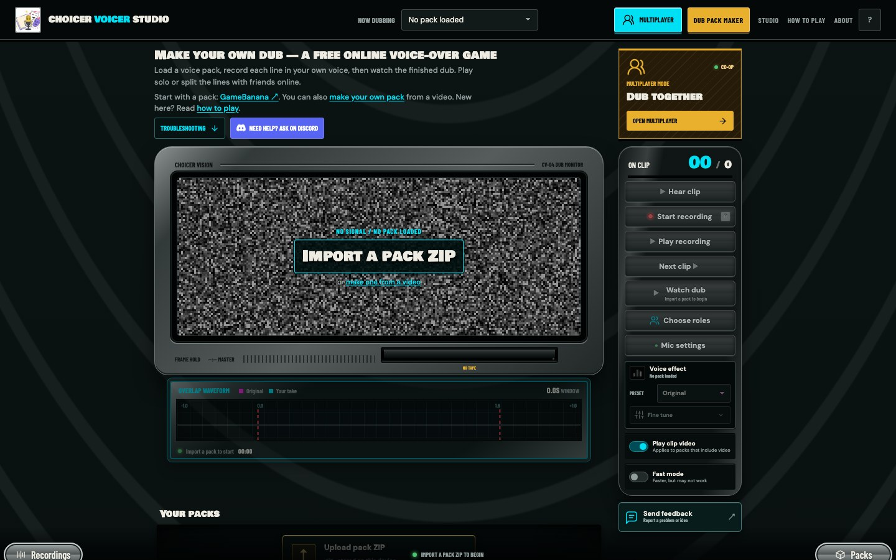
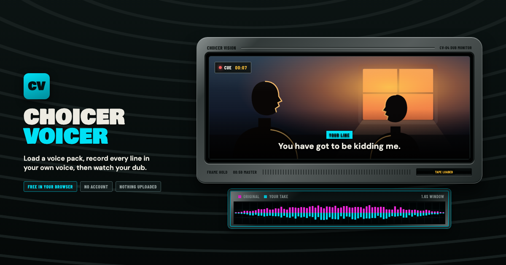
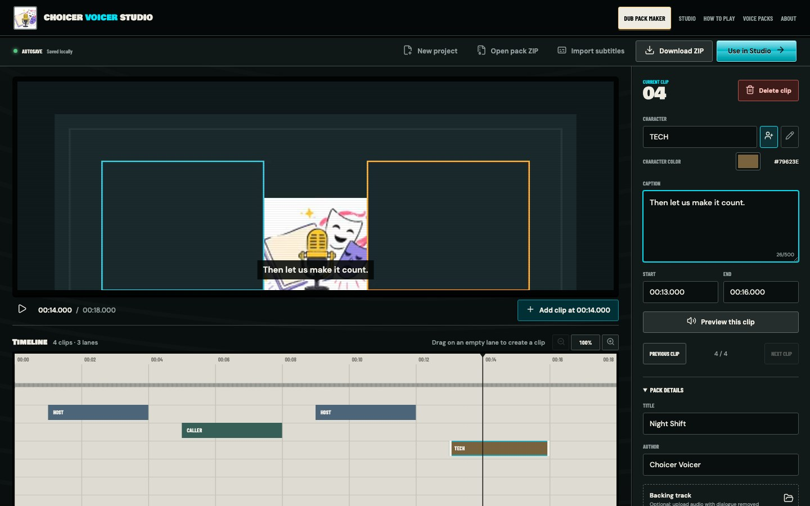
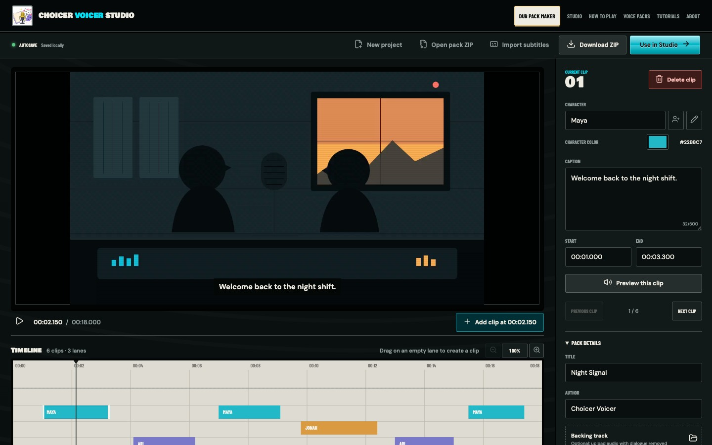
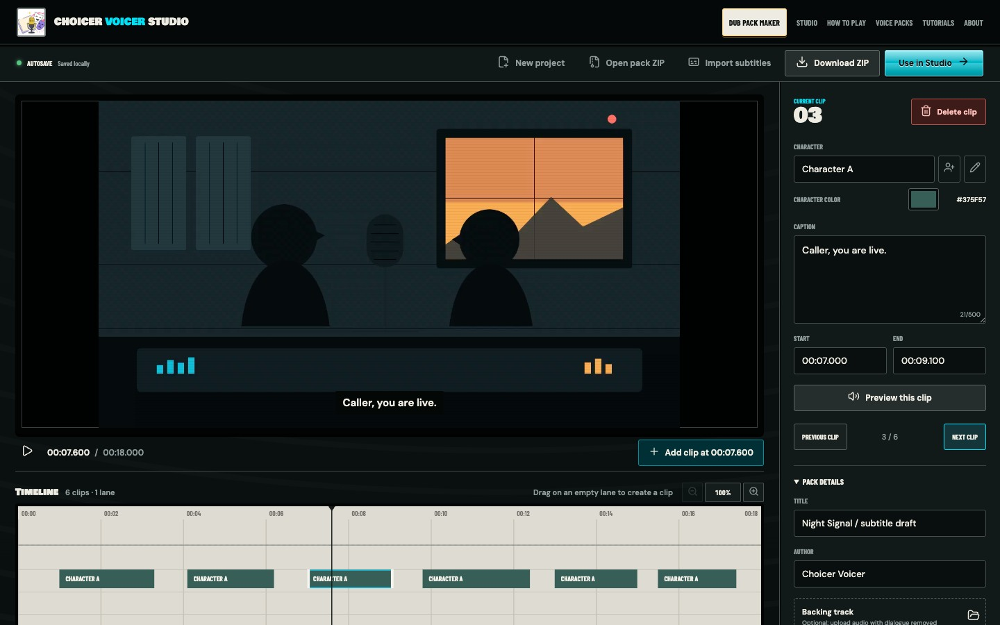
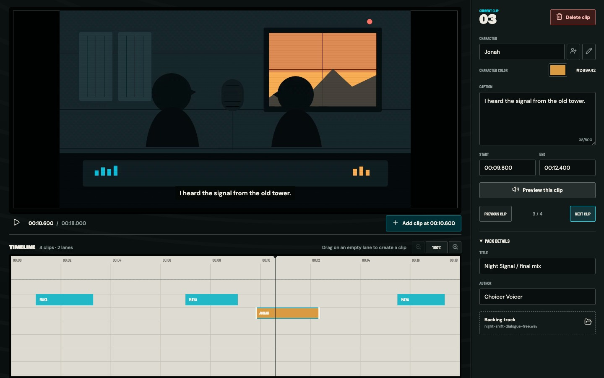

Getting started with Choicer Voicer Studio
Import a pack ZIP, hear the original delivery, record each line, and watch the scene come back with your voice in it.
 CHOICER VOICER STUDIO
CHOICER VOICER STUDIO

Make the first recording, build a pack of your own, then get the fiddly parts right. These guides follow the same path as a real session.
Use an existing voice pack if you want to perform. Open Pack Maker if you already have a scene you want to turn into a game.

Import a pack ZIP, hear the original delivery, record each line, and watch the scene come back with your voice in it.

Mark the spoken lines, name the characters, add captions, and download a ZIP that opens directly in the Studio.
Timing and room sound do more for a dub than expensive equipment. The rest of the toolkit helps once those two are under control.
Set the mic once, keep speakers out of the recording, and make retakes that cut together cleanly.
Read early starts, late endings, and level mismatches without turning the session into a scoring contest.
Keep speakers on separate timeline lanes and rename or merge characters without editing every clip.

Turn a subtitle file into editable clips, then clean the timings before you export the pack.

Preserve music and sound effects under the new voices, and spot a track that will drift out of sync.

Start with a preset, adjust pitch and texture carefully, and check the effect against the full scene.
Create a room, match the pack on every device, assign roles, and collect the finished scene.
Prepare the browser for a long render, understand format differences, and recover from the common failures.